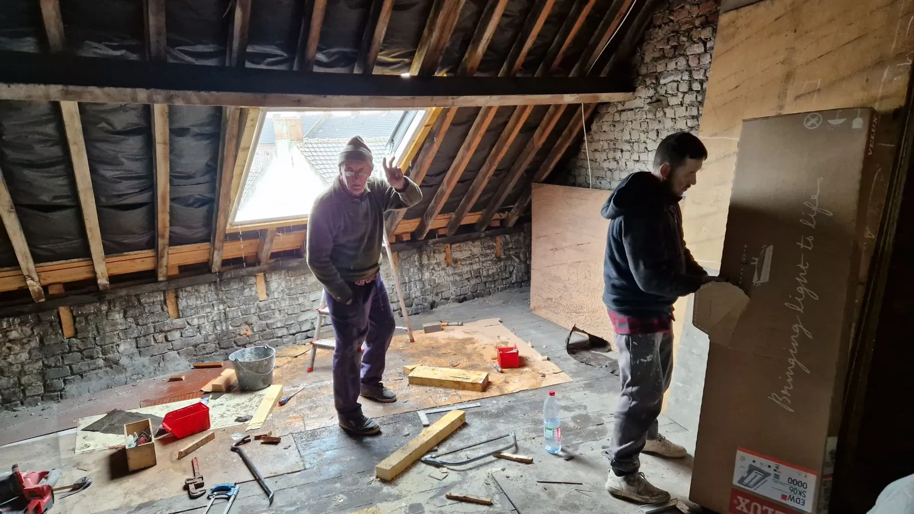
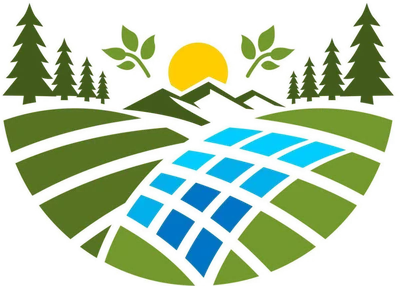

Qui suis-je
Michael. Les mains dans le chantier.
LOGE&NERJ est une société familiale installée à Somain, dans le Nord. On fait de la rénovation tous corps d’état, seul ou en petite équipe selon le chantier. Vous avez un seul interlocuteur du devis à la fin des travaux.

Salle de bain, isolation, toiture, fenêtres, peinture, électricité, plomberie : je prends le chantier en entier ou un seul poste, et je dépanne aussi.
Ce que j’aime dans ce métier, c’est le moment où une pièce brute devient une pièce où l’on a envie d’entrer.

LOGE&NERJ Société familiale · Somain (Nord)Règles
Mes règles de chantier
Suivre mes chantiers sur Facebook
- Le devis est gratuit et détaillé.Poste par poste, sans ligne fourre-tout.
- Le chantier est propre chaque soir.Protections au sol, gravats évacués, outils rangés.
- Je dis ce que je ne sais pas faire.Et je vous oriente vers quelqu’un de confiance.